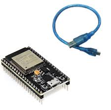

Bienvenue sur le site ESP32
Découvrez ce microcontrôleur puissant et polyvalent, qui est au cœur de nombreux projets connectés (IoT). Grâce à sa capacité à se connecter en Wi-Fi et en Bluetooth, l'ESP32 offre de nombreuses possibilités pour vos projets électroniques.
